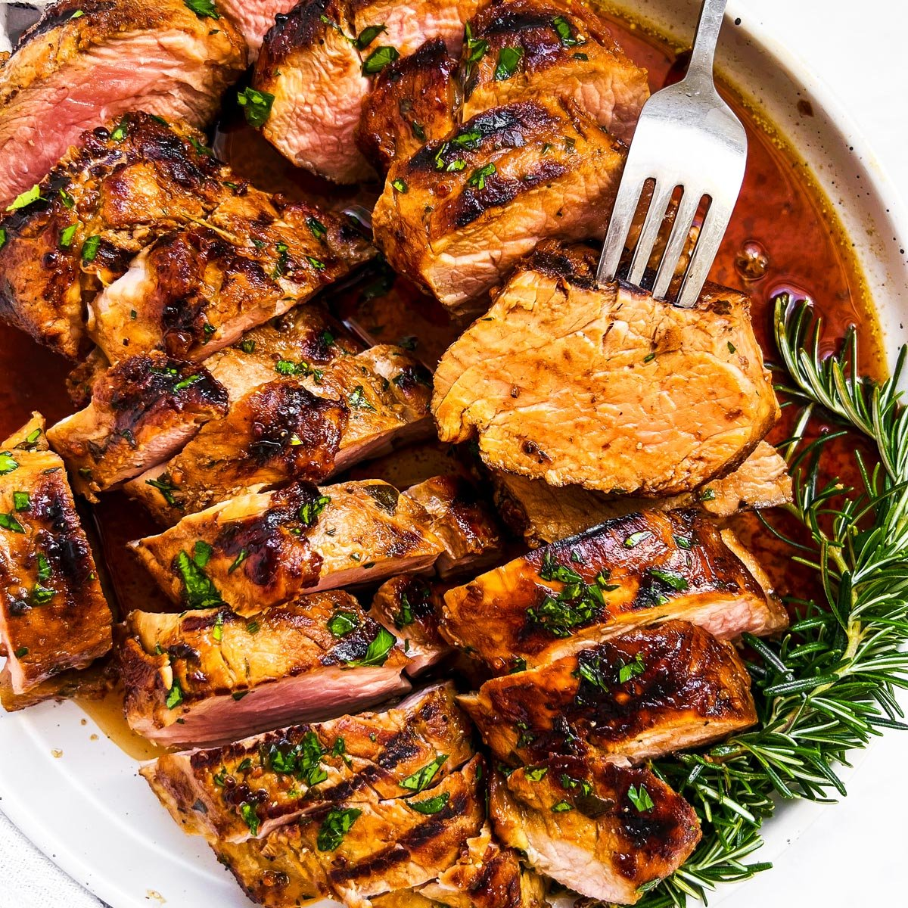
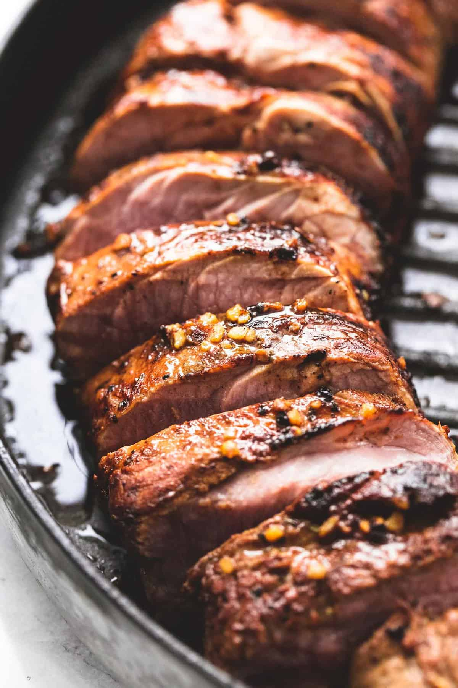

Description
This marinated pork loin cooks up nicely on the grill. It tastes best when marinated for 24 hours.

Ingredients
- ¼ cup honey
- 2 (12 ounce) pork tenderloins
- 1 tablespoon minced garlic
- 1 tablespoon chopped fresh parsley
- ¼ teaspoon ground cinnamon
Steps
- Make marinade: Whisk together honey, soy sauce, oyster sauce, brown sugar, ginger, ketchup, garlic, parsley, onion powder, cayenne pepper, and cinnamon in a medium bowl; pour into a resealable plastic bag.
- Place pork tenderloins into the bag; coat with marinade, squeeze out excess air, and seal the bag. Marinate in the refrigerator for at least 1 hour or up to 24 hours.
- Remove pork tenderloins from marinade; shake off excess. Discard remaining marinade.
- Cook pork tenderloins on the preheated grill until no longer pink in the center, 20 to 30 minutes, turning occasionally. An instant-read thermometer inserted into the centers should read at least 145 degrees F (63 degrees C).
